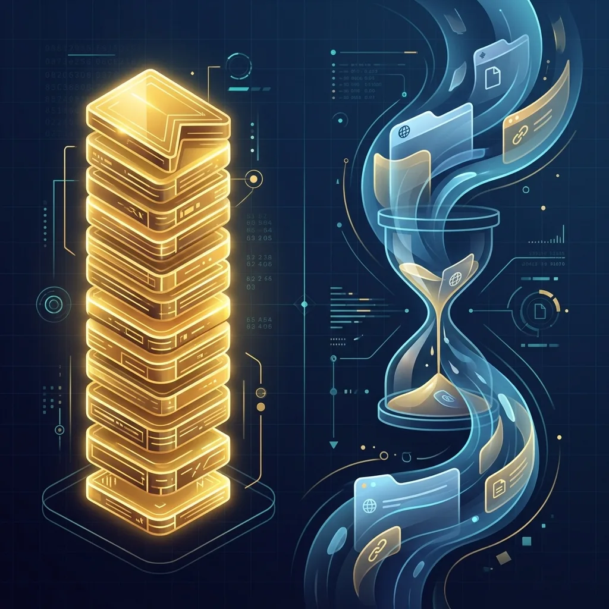

To organize bookmarks in Chrome, open the bookmark manager (Ctrl+Shift+O, or ⌘+Option+B on Mac), create a small number of top-level folders by purpose, drag your bookmarks into them, and remove duplicates and dead links. The structure stays tidy when every new bookmark has an obvious home.
Why bookmarks get messy
Bookmarking is one keystroke; sorting is a decision. So most bookmarks land wherever Chrome puts them — the bookmarks bar or “Other bookmarks” — and stay there. A year later you have hundreds of links, the same page saved three times, and a few that no longer open.
Step 1: Decide on a few top-level folders
Keep the first level short — five to seven folders. Sort by what you use it for, not by website.
| Folder | What goes in it |
|---|---|
| Daily | Mail, calendar, chat — what you open every day |
| Projects | One subfolder per client or project |
| Reference | Docs, guides and tools you return to |
| Read later | Articles to read once and then delete |
| Personal | Shopping, travel, hobbies |
| Archive | Finished projects you might need again |
Two levels deep is usually enough. If you need a third level, the folder above is probably doing two jobs.
Step 2: Sort them in the bookmark manager
- Open it with Ctrl+Shift+O (⌘+Option+B on Mac), or type
chrome://bookmarks. - Select several at once with Shift or Ctrl (⌘ on Mac), then drag them into a folder together.
- Use the search box at the top to gather everything from one site, then move it in one go.
- Keep the bookmarks bar for the handful of sites you open daily. Show or hide it with Ctrl+Shift+B (⌘+Shift+B on Mac).
Step 3: Remove duplicates and dead links
Chrome itself doesn’t point out duplicates or broken bookmarks. LB TAB Layers does, in its Clean mode, for free:
- Find duplicates scans all your bookmark folders and lists the same URL saved more than once. When you remove them, the oldest copy in each set is kept.
- Dead-link check finds bookmarks that no longer open.
Step 4: Keep it tidy from now on
The structure only lasts if saving into the right folder is as easy as saving anywhere. That is the idea behind LB TAB Layers: your groups are Chrome bookmark folders, and they sit in the side panel next to the page you are reading. Saving a tab into a group saves it into that folder.
- Right-click any page and choose Save to TAB Layers to put it straight into a group.
- Open tabs that aren’t saved anywhere wait under Solo Tabs until you sort them.
- When a project is finished, right-click its group and choose Archive to put it away without deleting it. You can Restore it later.
To bring your existing bookmarks into groups on a full screen, use the dashboard (PRO, included in the free trial).
Frequently asked questions
Q. How do I open the bookmark manager in Chrome?
Press Ctrl+Shift+O on Windows (⌘+Option+B on Mac), or type chrome://bookmarks in the address bar.
Q. How should I structure bookmark folders?
Keep five to seven top-level folders sorted by purpose — for example Daily, Projects, Reference, Read later, Personal and Archive — and go no more than two levels deep.
Q. How do I find duplicate bookmarks in Chrome?
Chrome has no built-in duplicate finder. The Clean mode of LB TAB Layers scans all your bookmark folders for the same URL saved more than once and removes the extras for free, keeping the oldest copy.
▶ See it in action
Managing bookmarks and tabs together in the sidebar. (The video shows the Japanese UI.)
Bookmarks that sort themselves as you save.
Your groups are Chrome bookmark folders. Try every feature free for 3 months.
Add to Chrome — it's free →